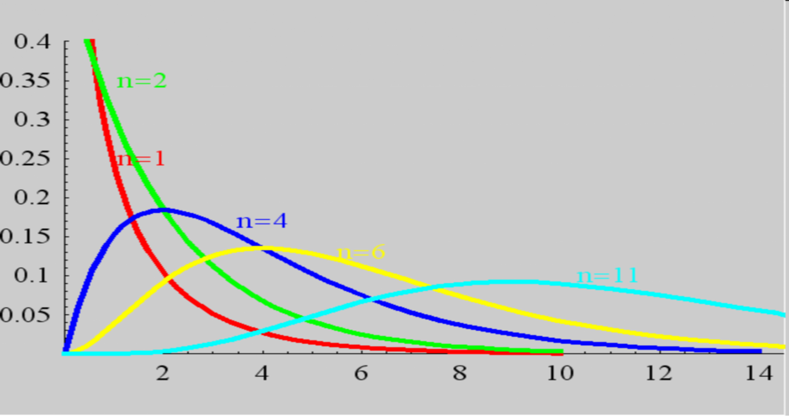
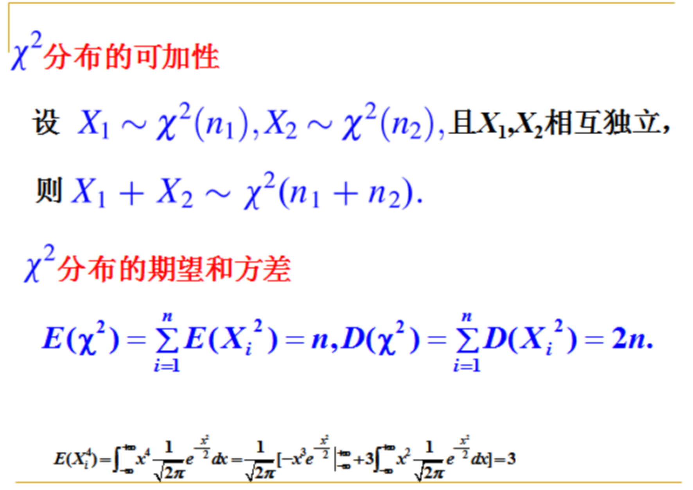
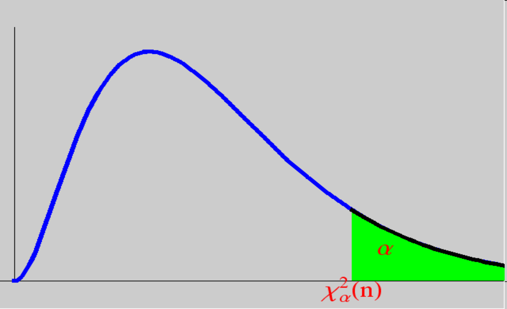
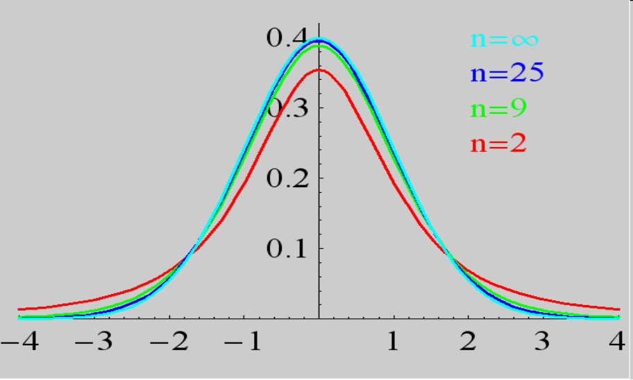
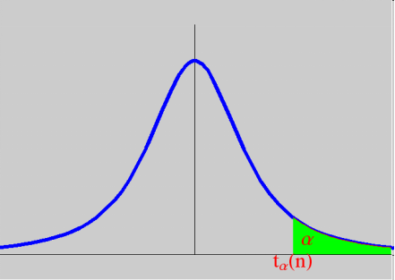
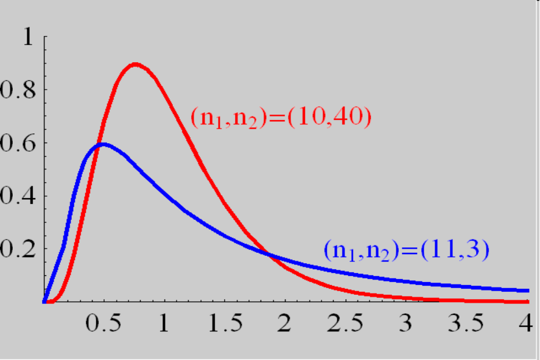

1 随机样本
1.1 总体
对有关对象的某一数量指标进行试验和观察，将试验的全部可能的观察值称为总体；
每一个可能的观察值称为个体，个体的数量称为总体的容量。
一个总体对应一个随机变量X；随机变量的分布函数和数字特征称为总体X的分布函数和数字特征。
1.2 样本
总体分布一般是未知的，或只知道是包含未知参数的分布。通过从总体中抽取一部分个体，根据获得的数据推断总体分布，这一抽取过程称为 “抽样”，所抽取的部分个体称为总体的一个样本. 样本中所包含的个体数目称为样本容量.
- 从总体抽取一个个体：对总体X进行一次观察并记录结果。
定义：设X是具有分布函数F的随机变量，若X1,X2,…,Xn是具有同一分布F的且相互独立的随机变量，则X1,X2,…,Xn为从总体X(总体F)得到的容量为n的简单随机样本，简称样本。
观察值X1,X2,…,Xn为样本值，又称为X的n个独立观察值。
“简单随机抽样”特点：X1,X2,…,Xn相互独立且每一个与所考察的总体有相同的分布.
(X1,X2,…,Xn)分布函数与联合概率密度函数满足：
- F∗(x,x2,…,xn)=F(x1)F(x2)…F(xn)
- f∗(x,x2,…,xn)=f(x1)f(x2)…f(xn)
2 抽样分布
2.1 统计量与经验分布函数
定义：设X1,X2,…,Xn是来自总体X的一个样本，g(X1,X2,…,Xn)是X1,X2,…,Xn的函数，若g中不含未知参数，则称g(X1,X2,…,Xn)是一个统计量。
- g(x1,x2,⋯,xn)是统计量g(X1,X2,…,Xn)的观察值。
2.1.1 几个常见的统计量
2.1.1.1 样本平均值
Xˉ=n1i=1∑nXi
2.1.1.2 样本方差
S2=n−11i=1∑n(Xi−Xˉ)2=n−11(i=1∑nXi2−nXˉ2)
2.1.1.3 样本标准差
S=n−11i=1∑n(Xi−Xˉ)2
2.1.1.4 样本k阶原点矩
Ak=n1i=1∑nXikk=1,2,…
2.1.1.5 样本k阶中心矩
Bk=n1i=1∑n(Xi−X)k
2.1.2 统计量的观察值
定理：若总体X的k阶矩E(Xk)=μk存在，则当n→∞时，AkPμk(k=1,2,⋯)
结论：设X1,X2,…,Xn是来自总体X的一个样本，则E(X)=μ，即：
E(A1)=E(n1i=1∑nXi)=E(X)=μ
2.2 统计三大抽样分布
统计量的分布称为抽样分布，来自正态总体的三个常用统计量的分布：χ2（卡方）分布、t分布和F分布。
$2.2.1 \chi^{2}
$分布
定义：设X1,X2,…,Xn相互独立，都服从正态分布N(0, 1)，则称随机变量
χ2=X12+X22+⋯+Xn2
服从自由度为n的χ2分布，记为χ2∼χ2(n)。
χ2(n)分布的概率密度为：
χ2(n)分布的概率密度图像为：


2.2.1.1χ2分布的分位点
对于给定的正数α，0<α<1，称满足以下条件的点χα2(n)为χ2(n)分布的上α分位点。
P{χ2>χα2(n)}=∫χα2(n)∞f(y)dy=α
当n充分大时，χα2(n)≈21(zα+2n−1)2，其中zα是正态分布的上α分位点。

2.2.2 t 分布
设X∼N(0,1),Y∼χ2(n)，且X，Y独立，则随机变量t=Y/nX服从自由度为n的t分布，记为t∼t(n)，t分布又称学生氏分布。
t(n)分布的概率密度函数为：
h(t)=πnΓ(2n)Γ(2n+1)(1+nt2)−2n+1−∞<t<+∞
2.2.2.1 t分布的性质
（1）具有自由度为n的t分布t~t(n)，其数学期望与方差为：E(t)=0,D(t)=n/(n−2)
（2）t分布的概率密度函数关于t=0对称，即当n足够大时，满足t∼ 近似 N(0,1)，即limn→∞h(t)=2π1e2−t2
t(n) 分布的概率密度曲线如下图所示：

（3）t分布的分位点：对于给定的α，0<α<1，称满足条件P{t>tα(n)}=∫tα(n)∞h(t)dt=α的点称为t(n)分布的上α分位点，如图所示：

t分布的上α分位点的性质：t1−α(n)=−tα(n)；当n>45时，tα(n)≈zα。
2.2.3 F分布
F(n1,n2)分布的概率密度为：
ψ(y)=⎩⎪⎪⎨⎪⎪⎧Γ(2n1)Γ(2n2)[1+(n2n1y)]2n1+n2Γ(2n1+n2)(n2n1)2n1y2n1−1,0,y>0,其他.
F分布的概率密度曲线如图

2.2.3.1 F分布的性质
（1）如果$ \mathbf{F}\sim\mathbf{F}\left(\mathbf{n}_1,\mathbf{n}_2\right) ，那么\frac{1}{\mathbf{F}} \sim F (\mathbf{n}_2,\mathbf{n}_1)$
（2）F分布的数学期望为：
E(F)=n2−2n2若n2>2
（3）F分布的分位数：对于给定的α，0<α<1，称满足条件
P{F>Fα(n1,n2)}=∫Fα(n1,n2)∞ϕ(y)dy=α
的点Fα(n1,n2)为F(n1,n2)分布的上α分位点，如图所示：
F分布的上α分位点的性质：F1−α(n1,n2)=Fα(n2,n1)1
F分布的上α分位数可查表求得，如下所示：
F0.95(12,9)=F0.05(9,12)1=2.801=0.357
2.3 正态总体的样本均值和样本方差的分布
设总体X（不管服从什么分布，只要均值和方差存在）的均值为μ，方差为σ2，X1,X2,…,Xn是来自X的一个样本，X，S²分别是样本均值和样本方差，则有：
E(Xˉ)=μ,D(Xˉ)=σ2/n,E(S2)=σ2
2.3.1 定理1
设X1,X2,…,Xn是来自正态总体N(μ,σ2)的样本，X是样本均值，则有：
X∼N(μ,nσ2)即σ/nXˉ−μ∼N(0,1)
2.3.2 定理2
设X1,X2,…,Xn是来自正态总体N(μ,σ2)的样本，X是样本均值，S²是样本方差，则有：
- σ2(n−1)S2∼χ2(n−1)
- X与S²独立
该定理主要适用于总体均值μ未知的情况。
2.3.3 定理3
设X1,X2,…,Xn是来自正态总体N(μ,σ2)的样本，X是样本均值，S²是样本方差，则有：
S/nXˉ−μ∼t(n−1)
主要适用于总体方差σ2未知的情况。
2.3.4 定理4
设X∼N(μ1,σ12)，Y∼N(μ2,σ22)，且X与Y独立，X1,X2,…,Xn1是来自X的样本，Y1,Y2,…,Yn2是来自Y的样本，X和Y分别是这两个样本的样本均值，S12和S22分别是这两个样本的样本方差，则有：
Swn11+n21(Xˉ−Yˉ)−(μ1−μ2)∼t(n1+n2−2)
当σ12=σ22=σ2时，有
Swn11+n21(Xˉ−Yˉ)−(μ1−μ2)∼t(n1+n2−2),
其中Sw2=n1+n2−2(n1−1)S12+(n2−1)S22,Sw=Sw2.
3 总结
本章主要介绍了以下内容：
- 总体和样本的概念
- 统计量和分布函数的定义
- 统计3大抽样分布：卡方分布、t分布和F分布
- 4个重要的抽样分布定理

 微信
微信 支付宝
支付宝